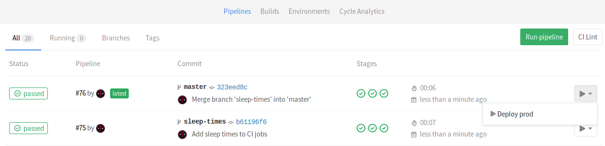
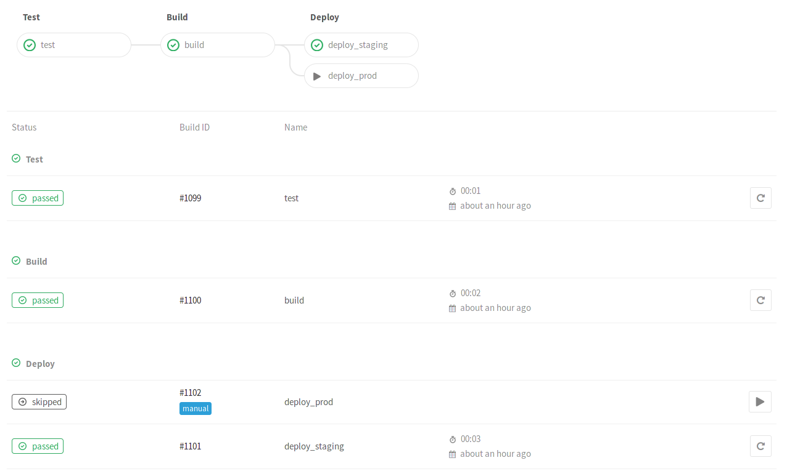
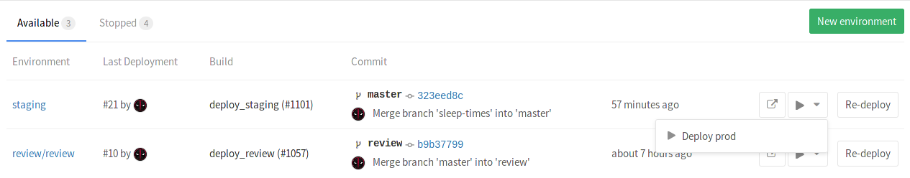
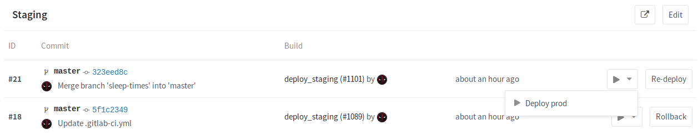
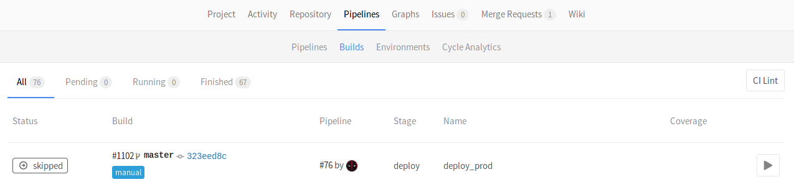
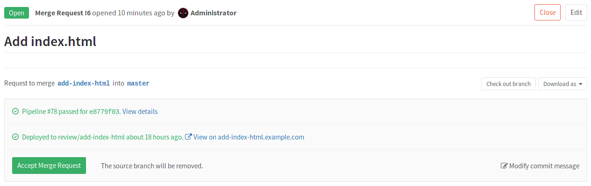
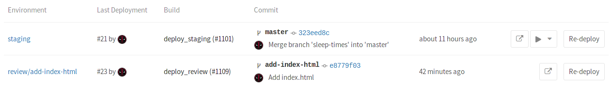
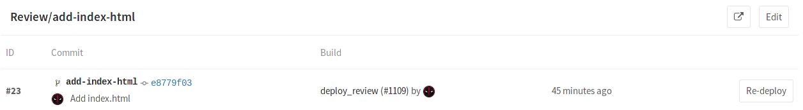

-
Introduction to environments and deployments
- Overview
- Defining environments
- Viewing the current status of an environment
- Viewing the deployment history of an environment
- Rolling back changes
- Manually deploying to environments
- Dynamic environments
- Making use of the environment URL
- Stopping an environment
- Grouping similar environments
- Checkout deployments locally
- Limitations
- Further reading
Introduction to environments and deployments
Note: Introduced in GitLab 8.9.
During the development of software, there can be many stages until it's ready for public consumption. You sure want to first test your code and then deploy it in a testing or staging environment before you release it to the public. That way you can prevent bugs not only in your software, but in the deployment process as well.
GitLab CI is capable of not only testing or building your projects, but also deploying them in your infrastructure, with the added benefit of giving you a way to track your deployments. In other words, you can always know what is currently being deployed or has been deployed on your servers.
Overview
With environments, you can control the Continuous Deployment of your software
all within GitLab. All you need to do is define them in your project's
.gitlab-ci.yml as we will explore below. GitLab provides a full
history of your deployments per every environment.
Environments are like tags for your CI jobs, describing where code gets deployed. Deployments are created when jobs deploy versions of code to environments, so every environment can have one or more deployments. GitLab keeps track of your deployments, so you always know what is currently being deployed on your servers.
To better understand how environments and deployments work, let's consider an example. We assume that you have already created a project in GitLab and set up a Runner. The example will cover the following:
- We are developing an application
- We want to run tests and build our app on all branches
- Our default branch is
master - We deploy the app only when a pipeline on
masterbranch is run
Let's see how it all ties together.
Defining environments
Let's consider the following .gitlab-ci.yml example:
stages:
- test
- build
- deploy
test:
stage: test
script: echo "Running tests"
build:
stage: build
script: echo "Building the app"
deploy_staging:
stage: deploy
script:
- echo "Deploy to staging server"
environment:
name: staging
url: https://staging.example.com
only:
- master
We have defined 3 stages:
- test
- build
- deploy
The jobs assigned to these stages will run in this order. If a job fails, then
the builds that are assigned to the next stage won't run, rendering the pipeline
as failed. In our case, the test job will run first, then the build and
lastly the deploy_staging. With this, we ensure that first the tests pass,
then our app is able to be built successfully, and lastly we deploy to the
staging server.
The environment keyword is just a hint for GitLab that this job actually
deploys to this environment's name. It can also have a url which, as we
will later see, is exposed in various places within GitLab. Each time a job that
has an environment specified and succeeds, a deployment is recorded, remembering
the Git SHA and environment name.
To sum up, with the above .gitlab-ci.yml we have achieved that:
- All branches will run the
testandbuildjobs. - The
deploy_stagingjob will run only on themasterbranch which means all merge requests that are created from branches don't get to deploy to the staging server - When a merge request is merged, all jobs will run and the
deploy_stagingin particular will deploy our code to a staging server while the deployment will be recorded in an environment namedstaging.
Let's now see how that information is exposed within GitLab.
Viewing the current status of an environment
The environment list under your project's Pipelines ➔ Environments, is where you can find information of the last deployment status of an environment.
Here's how the Environments page looks so far.
There's a bunch of information there, specifically you can see:
- The environment's name with a link to its deployments
- The last deployment ID number and who performed it
- The build ID of the last deployment with its respective job name
- The commit information of the last deployment such as who committed, to what branch and the Git SHA of the commit
- The exact time the last deployment was performed
- A button that takes you to the URL that you have defined under the
environmentkeyword in.gitlab-ci.yml - A button that re-deploys the latest deployment, meaning it runs the job defined by the environment name for that specific commit
Notes:
- While you can create environments manually in the web interface, we recommend that you define your environments in
.gitlab-ci.ymlfirst. They will be automatically created for you after the first deploy.- The environments page can only be viewed by Reporters and above. For more information on the permissions, see the permissions documentation.
- Only deploys that happen after your
.gitlab-ci.ymlis properly configured will show up in the "Environment" and "Last deployment" lists.
The information shown in the Environments page is limited to the latest deployments, but as you may have guessed an environment can have multiple deployments.
Viewing the deployment history of an environment
GitLab keeps track of your deployments, so you always know what is currently being deployed on your servers. That way you can have the full history of your deployments per every environment right in your browser. Clicking on an environment will show the history of its deployments. Assuming you have deployed multiple times already, here's how a specific environment's page looks like.
We can see the same information as when in the Environments page, but this time all deployments are shown. As you may have noticed, apart from the Re-deploy button there are now Rollback buttons for each deployment. Let's see how that works.
Rolling back changes
You can't control everything, so sometimes things go wrong. When that unfortunate
time comes GitLab has you covered. Simply by clicking the Rollback button
that can be found in the deployments page
(Pipelines ➔ Environments ➔ environment name) you can relaunch the
job with the commit associated with it.
Note: Bare in mind that your mileage will vary and it's entirely up to how you define the deployment process in the job's
scriptwhether the rollback succeeds or not. GitLab CI is just following orders.
Thankfully that was the staging server that we had to rollback, and since we learn from our mistakes, we decided to not make the same again when we deploy to the production server. Enter manual actions for deployments.
Manually deploying to environments
Turning a job from running automatically to a manual action is as simple as
adding when: manual to it. To expand on our previous example, let's add
another job that this time deploys our app to a production server and is
tracked by a production environment. The .gitlab-ci.yml looks like this
so far:
stages:
- test
- build
- deploy
test:
stage: test
script: echo "Running tests"
build:
stage: build
script: echo "Building the app"
deploy_staging:
stage: deploy
script:
- echo "Deploy to staging server"
environment:
name: staging
url: https://staging.example.com
only:
- master
deploy_prod:
stage: deploy
script:
- echo "Deploy to production server"
environment:
name: production
url: https://example.com
when: manual
only:
- master
The when: manual action exposes a play button in GitLab's UI and the
deploy_prod job will only be triggered if and when we click that play button.
You can find it in the pipeline, build, environment, and deployment views.
| Pipelines | Single pipeline | Environments | Deployments | Builds |
|---|---|---|---|---|
|  |  |  |  |  |
Clicking on the play button in either of these places will trigger the
deploy_prod job, and the deployment will be recorded under a new
environment named production.
Note: Remember that if your environment's name is
production(all lowercase), then it will get recorded in Cycle Analytics. Double the benefit!
While this is fine for deploying to some stable environments like staging or
production, what happens for branches? So far we haven't defined anything
regarding deployments for branches other than master. Dynamic environments
will help us achieve that.
Dynamic environments
As the name suggests, it is possible to create environments on the fly by just
declaring their names dynamically in .gitlab-ci.yml. Dynamic environments is
the basis of Review apps.
GitLab Runner exposes various environment variables when a job runs,
and as such, you can use them as environment names. Let's add another job in
our example which will deploy to all branches except master:
deploy_review:
stage: deploy
script:
- echo "Deploy a review app"
environment:
name: review/$CI_BUILD_REF_NAME
url: https://$CI_BUILD_REF_NAME.example.com
only:
- branches
except:
- master
Let's break it down in pieces. The job's name is deploy_review and it runs
on the deploy stage. The script at this point is fictional, you'd have to
use your own based on your deployment. Then, we set the environment with the
environment:name being review/$CI_BUILD_REF_NAME. Now that's an interesting
one. Since the environment name can contain also slashes (/), we
can use this pattern to distinguish between dynamic environments and the regular
ones.
So, the first part is review, followed by a / and then $CI_BUILD_REF_NAME
which takes the value of the branch name. We also use the same
$CI_BUILD_REF_NAME value in the environment:url so that the environment
can get a specific and distinct URL for each branch. Again, the way you set up
the webserver to serve these requests is based on your setup.
Last but not least, we tell the job to run only on branches
except master.
Note: You are not bound to use the same prefix or only slashes in the dynamic environments' names (
/), but as we will see later, this will enable the grouping similar environments feature.
The whole .gitlab-ci.yml looks like this so far:
stages:
- test
- build
- deploy
test:
stage: test
script: echo "Running tests"
build:
stage: build
script: echo "Building the app"
deploy_review:
stage: deploy
script:
- echo "Deploy a review app"
environment:
name: review/$CI_BUILD_REF_NAME
url: https://$CI_BUILD_REF_NAME.example.com
only:
- branches
except:
- master
deploy_staging:
stage: deploy
script:
- echo "Deploy to staging server"
environment:
name: staging
url: https://staging.example.com
only:
- master
deploy_prod:
stage: deploy
script:
- echo "Deploy to production server"
environment:
name: production
url: https://example.com
when: manual
only:
- master
A more realistic example would include copying files to a location where a
webserver (NGINX) could then read and serve. The example below will copy the
public directory to /srv/nginx/$CI_BUILD_REF_NAME/public:
review_app:
stage: deploy
script:
- rsync -av --delete public /srv/nginx/$CI_BUILD_REF_NAME
environment:
name: review/$CI_BUILD_REF_NAME
url: https://$CI_BUILD_REF_NAME.example.com
It is assumed that the user has already setup NGINX and GitLab Runner in the server this job will run on.
Note: Be sure to check out the limitations section for some edge cases regarding naming of you branches and Review Apps.
The development workflow would now be:
- Developer creates a branch locally
- Developer makes changes, commits and pushes the branch to GitLab
- Developer creates a merge request
Behind the scenes:
- GitLab Runner picks up the changes and starts running the jobs
- The jobs run sequentially as defined in
stages- First, the tests pass
- Then, the build begins and successfully also passes
- Lastly, the app is deployed to an environment with a name specific to the branch
So now, every branch gets its own environment and is deployed to its own place with the added benefit of having a history of deployments and also being able to rollback changes if needed. Let's briefly see where URL that's defined in the environments is exposed.
Making use of the environment URL
The environment URL is exposed in a few places within GitLab.
| In a merge request widget as a link | In the Environments view as a button | In the Deployments view as a button |
|---|---|---|
|  |  |  |
If a merge request is eventually merged to the default branch (in our case
master) and that branch also deploys to an environment (in our case staging
and/or production) you can see this information in the merge request itself.
We now have a full development cycle, where our app is tested, built, deployed as a Review app, deployed to a staging server once the merge request is merged, and finally manually deployed to the production server. What we just described is a single workflow, but imagine tens of developers working on a project at the same time. They each push to their branches, and dynamic environments are created all the time. In that case, we probably need to do some clean up. Read next how environments can be stopped.
Stopping an environment
By stopping an environment, you are effectively terminating its recording of the deployments that happen in it.
A branch is associated with an environment when the CI pipeline that is created
for this branch, was recently deployed to this environment. You can think of
the CI pipeline as the glue between the branch and the environment:
branch ➔ CI pipeline ➔ environment.
There is a special case where environments can be manually stopped. That can happen if you provide another job for that matter. The syntax is a little tricky since a job calls another job to do the job.
Consider the following example where the deploy_review calls the stop_review
to clean up and stop the environment:
deploy_review:
stage: deploy
script:
- echo "Deploy a review app"
environment:
name: review/$CI_BUILD_REF_NAME
url: https://$CI_BUILD_REF_NAME.example.com
on_stop: stop_review
only:
- branches
except:
- master
stop_review:
variables:
GIT_STRATEGY: none
script:
- echo "Remove review app"
when: manual
environment:
name: review/$CI_BUILD_REF_NAME
action: stop
Setting the GIT_STRATEGY to none is necessary on the
stop_review job so that the GitLab Runner won't try to checkout the code
after the branch is deleted.
Note: Starting with GitLab 8.14, dynamic environments will be stopped automatically when their associated branch is deleted.
When you have an environment that has a stop action defined (typically when the environment describes a review app), GitLab will automatically trigger a stop action when the associated branch is deleted.
You can read more in the .gitlab-ci.yml reference.
Grouping similar environments
Introduced in GitLab 8.14.
As we've seen in the dynamic environments, you can
prepend their name with a word, then followed by a / and finally the branch
name which is automatically defined by the CI_BUILD_REF_NAME variable.
In short, environments that are named like type/foo are presented under a
group named type.
In our minimal example, we name the environments review/$CI_BUILD_REF_NAME
where $CI_BUILD_REF_NAME is the branch name:
deploy_review:
stage: deploy
script:
- echo "Deploy a review app"
environment:
name: review/$CI_BUILD_REF_NAME
In that case, if you visit the Environments page, and provided the branches exist, you should see something like:
Checkout deployments locally
Since 8.13, a reference in the git repository is saved for each deployment. So
knowing what the state is of your current environments is only a git fetch
away.
In your git config, append the [remote "<your-remote>"] block with an extra
fetch line:
fetch = +refs/environments/*:refs/remotes/origin/environments/*
Limitations
- If the branch name contains special characters (
/), and you use the$CI_BUILD_REF_NAMEvariable to dynamically create environments, there might be complications during your Review Apps deployment. Follow the issue 22849 for more information. - You are limited to use only the CI predefined variables in the
environment: name. If you try to re-use variables defined insidescriptas part of the environment name, it will not work.
Further reading
Below are some links you may find interesting:
- The
.gitlab-ci.ymldefinition of environments - A blog post on Deployments & Environments
- Review Apps - Use dynamic environments to deploy your code for every branch